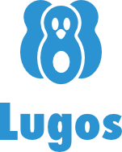
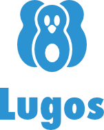

OpenOffice.org Conference (OOoCon 2006)
11 - 13 septembre 2006 – Lyon, France
Nouvelles
11 jan. 2006 Ouverture de l' appel à candidature
10 fev. 2006 Ouverture des votes pour le lieu de la Conférence OpenOffice.org
22 fev. 2006 Les OOoCon2006 seront à Lyon
17 mar. 2006 Ouverture de l'Appel à participation à la conférence - note: fermeture le 1er juin
2 juin 2006 À cause d'un problème du serveur de mail le 31 mai, la fin de l'appel à conférences est reportée au Lundi 5 juin 2006
4 juin 2006 Grâce à notre partenaire, Air France, vous pouvez avoir des réductions sur votre voyage vers la Conférence OpenOffice.org 2006. Pour plus d'informations, reportez vous à la page Voyage.
15 juin 2006 Ouverture des inscriptions pour participer à la Conférence OpenOffice.org 2006. S'inscrire maintenant.
2 septembre 2006 Voici quelques photos du lieu principal des conférences. Vu de l'extérieur, vu de l'intérieur.
11 septembre 2006 Ne vous perdez pas sur le campus, l'accueil est à l'adresse suivante : 49 avenue Jean Capelle
OpenOffice.org publie le programme de ses conférences annuelles
Les conférences annuelles d'OpenOffice.org vont avoir lieu à Lyon du 11 au 13 septembre. Le comité d'organisation à enfin achevé la dure tâche de sélection des meilleures propositions de conférences et un programme prévisionnel est maintenant en ligne à http://marketing.openoffice.org/ooocon2006/schedule.html.
Le point culminant de la conférence accueillera des intervenants tels que Debra Anderson (Novell) ou Zaheda Bhorat (Google) ainsi qu'une table ronde regroupant des participants tels que Eduardo Gutentag (Sun), Bob Sutor (IBM), Nathaniel Borenstein (IBM) ou Charles-H Schulz (Ars Aperta). Au cours de ces trois jours, le fil des conférences couvrira des thèmes pertinents tant pour les développeurs que pour les utilisateurs, répondant aux interrogations des nouveaux venus mais également à celles des anciens. Une attention particulière sera portée cette année sur OpenOffice.org et le format Open Document (ODF), après la normalisation du standard ODF comme norme internationale pour les documents de bureautique (ISO 26300).
Les organisateurs n'ont pas oublié non plus le côté festif, en tirant le meilleur parti de Lyon, centre gatronomique de la France. Cette année encore, les organisateurs vont relever le défi des années passées.
Il est toujours possible de s'inscrire pour participer aux conférences. Pour cela visitez la page http://marketing.openoffice.org/ooocon2006/registration.html
L'équipe des conférences OpenOffice.org vous attends avec impatience à Lyon !
Intéressé à participer ?
Si vous êtes intéressés pour participer, inscrivez-vous sur la liste dédiée aux participants aux conférences ooocon2006_discuss@marketing.openoffice.org en envoyant un message vide à ooocon2006_discuss-subscribe@marketing.openoffice.org. Notez que les conférences seront en anglais.
Nos sponsors
Premium


{kind=link}
{kind=link}
Gold


 

Silver